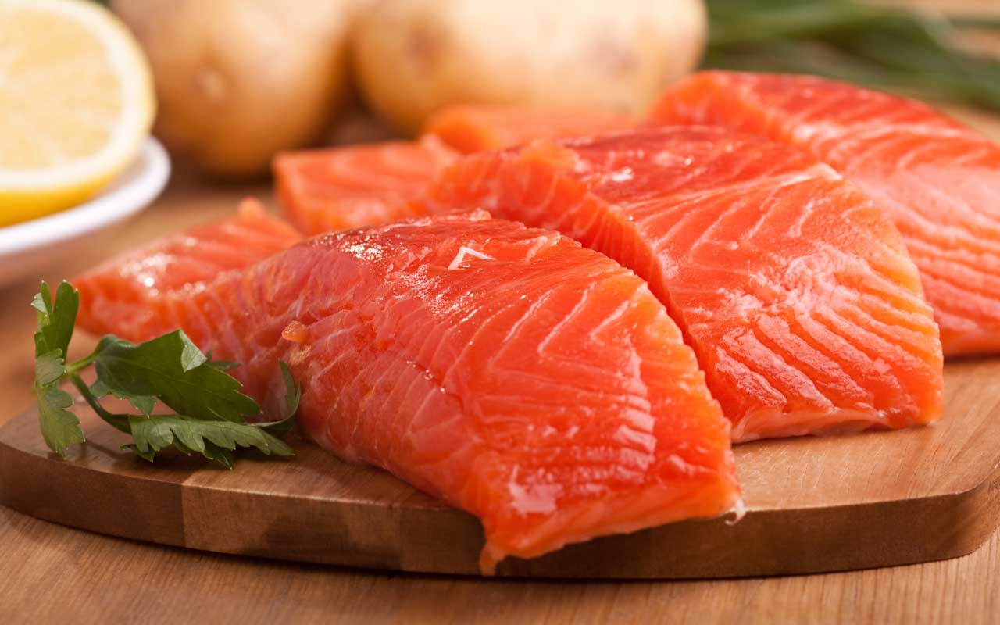
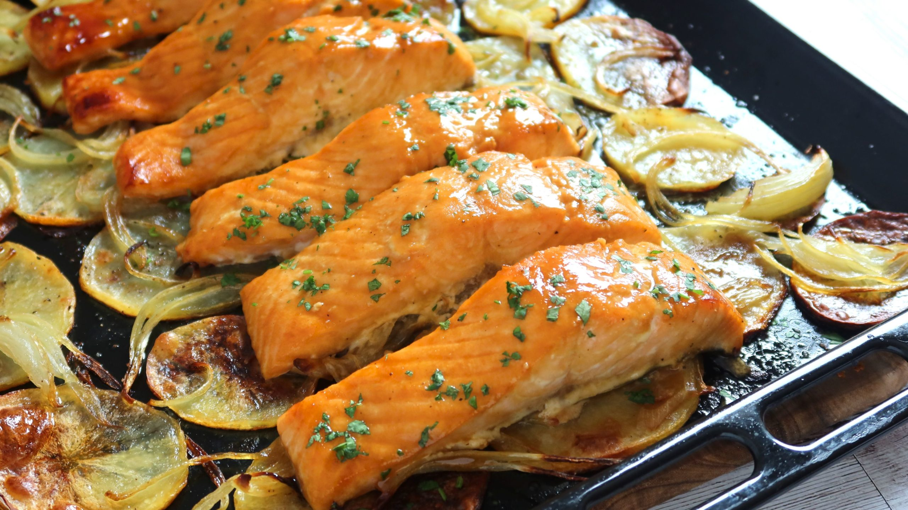

Tronar a la pàgina principal
Salmó al forn
Ingredients
- 2 filets de salmó (aprox. 150 g cada un)
- 1 llimona
- herbes al gust
- sal i pebre
Pas a pas
-
Preescalfar el forn a 180 ºC.

-
Col·locar els filets en una safata i amanir.
Afegir 2 filets de salmó i 1 llimona tallada.

-
Coure al forn durant 12-15 minuts segons l'espessor.

Resultat final
Salmó sucós, perfecte per acompanyar amb amanida o verdures.

Tornar a l'encapçalament principal